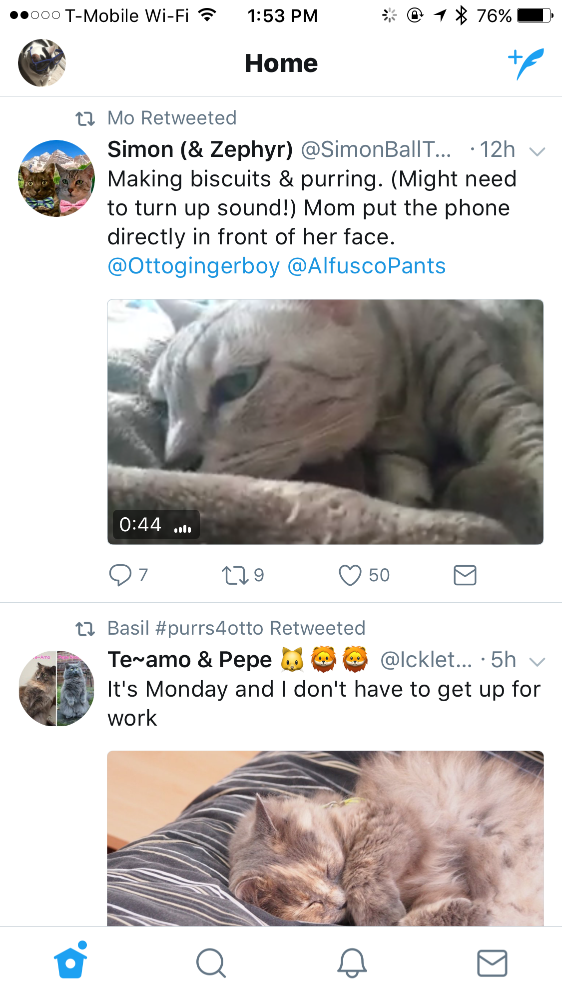

<!--
Copyright (c) 2016 Google Inc.

Licensed under the Apache License, Version 2.0 (the "License"); you may not
use this file except in compliance with the License. You may obtain a copy of
the License at

    http://www.apache.org/licenses/LICENSE-2.0

Unless required by applicable law or agreed to in writing, software
distributed under the License is distributed on an "AS IS" BASIS, WITHOUT
WARRANTIES OR CONDITIONS OF ANY KIND, either express or implied. See the
License for the specific language governing permissions and limitations under
the License.
-->
<link rel="import" href="../step-style.html">
<link rel="import" href="../styntax-style.html">
<dom-module id="step-4">
   <style include="step-style"></style>
   <style include="syntax-style"></style>

  <template>
    <p>Let's make this app look more like Twitter. First we will change some CSS styles.</p>
    <p>As a reminder, Twitter's feed looks like this:</p>
    
    
    <p>Replace the code in your app.scss file with the following code:</p>
    <pre><code>
      @import url("~/platform.css");

      ActionBar {
        background-color: white;
        font-size: 25;
        font-weight: bold;
      }

      .fa {
        font-family: FontAwesome, fontawesome-webfont;
      }

      @import 'nativescript-theme-core/css/core.light.css';

    </code></pre>

    <p>Notice we have enabled the platform.css folders to be displayed on each platform (NativeScript understand that platform.ios.css will be shown only on iOS, and vice versa on Android).
      Also, we edited the ActionBar styles and ensured that we are using FontAwesome fonts, whose plugin is already installed. Finally, we make use of the light core theme, which sets up some basic styles.</p>

    <p>Next, we will edit the tabs. Twitter uses four tabs with no descriptive text, so replace the code in tabs/tabs.component.html with the following: </p>
    <pre></code>
&#x3C;TabView (selectedIndexChanged)=&#x22;onSelectedIndexChanged($event)&#x22;&#x3E;
    &#x3C;StackLayout *tabItem=&#x22;{iconSource: getIconSource(&#x27;home&#x27;)}&#x22;&#x3E;
        &#x3C;Home&#x3E;&#x3C;/Home&#x3E;
    &#x3C;/StackLayout&#x3E;
    &#x3C;StackLayout *tabItem=&#x22;{iconSource: getIconSource(&#x27;search&#x27;)}&#x22;&#x3E;
        &#x3C;Search&#x3E;&#x3C;/Search&#x3E;
    &#x3C;/StackLayout&#x3E;
    &#x3C;StackLayout *tabItem=&#x22;{iconSource: getIconSource(&#x27;notifications&#x27;)}&#x22;&#x3E;
        &#x3C;Featured&#x3E;&#x3C;/Featured&#x3E;
    &#x3C;/StackLayout&#x3E;
    &#x3C;StackLayout *tabItem=&#x22;{iconSource: getIconSource(&#x27;messages&#x27;)}&#x22;&#x3E;
        &#x3C;Settings&#x3E;&#x3C;/Settings&#x3E;
    &#x3C;/StackLayout&#x3E;
&#x3C;/TabView&#x3E;
    </code></pre>
<p>When refreshing your emulator via livesync, you'll notice that now, only half your tabs show up. 
    That's because we don't have 'notifications' and 'messages' icons. Let's add those, and refresh the other icons
    to align the app with Twitter's icon style.</p>
<p><b>Replace</b> the contents of app/App_Resources/iOS/tabIcons folder with the contents of <a href="https://github.com/jlooper/snacklabs/tree/master/snacklabs/flexbox/images/ios/tabIcons">this folder</a>.</p>
<p><b>Add</b> the contents of <a href="https://github.com/jlooper/snacklabs/tree/master/snacklabs/flexbox/images/android">this folder</a> to the matching folders of app/App_Resources/android.</p>
<p>Rebuild your app by pressing ctrl-c to exit livesync, then restart it by typing tns run ios or tns run android. You'll see your fresh new icon tabs!</p>
<p>Since we edited the code above, we now have lost the title on our ActionBar! Let's fix that.</p>

<hr>

<p>The ActionBar in the Twitter app differs on each page, so we will build new ActionBars for each separate component.  
    The Home ActionBar contains the profile picture, the title, and an icon to tweet. We need some supplementary files before we can build this, so do the following:</p>

<ol>
    <li>Add images for the profile picture by creating a new images folder in the app folder, and adding to it the four files found <a href="https://github.com/jlooper/snacklabs/tree/master/snacklabs/flexbox/images/cats">here</a>.</li>
    <li>Add <a href="https://github.com/jlooper/snacklabs/blob/master/snacklabs/flexbox/fonts/edge-icons-Regular.ttf">this file</a> to the app/fonts folder</li>
</ol>

<p>Then, edit your app's css to view this new font. In app/app.scss add the following code under the .fa class:</p>

<pre>
.ei {
  font-family: EdgeIcons, edge-icons-Regular;
}
.profile-image{
  clip-path: circle(100% at 50% 50%); 
  margin: 5;
  padding: 5;
}
</pre>

<p>Now, we can edit the app/tabs/home/home.component.html file to build our new ActionBar:

<pre><code>
&#x3C;ActionBar class=&#x22;action-bar&#x22;&#x3E;
    &#x3C;ActionItem ios.position=&#x22;left&#x22; android.position=&#x22;left&#x22;&#x3E;
        &#x3C;Image class=&#x22;profile-image&#x22; src=&#x22;~/images/k2&#x22;&#x3E;&#x3C;/Image&#x3E;
    &#x3C;/ActionItem&#x3E;
    &#x3C;Label text=&#x22;Home&#x22;&#x3E;&#x3C;/Label&#x3E;
    &#x3C;ActionItem ios.position=&#x22;right&#x22;&#x3E;
        &#x3C;Button class=&#x22;ei&#x22; text=&#x22;&#x26;#xf029;&#x22;&#x3E;&#x3C;/Button&#x3E;
    &#x3C;/ActionItem&#x3E;
&#x3C;/ActionBar&#x3E;
</code></pre>

You should now be able to see a nice ActionBar with a circular portrait, the title, and a button we will enable later to send Yowwls! Next, we'll populate the Home screen with cat check-ins.</p>

  </template>
  <script>
    Polymer({
      is: "step-4"});
  </script>
</dom-module>
